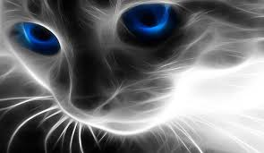
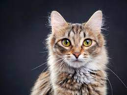

Os gatos são os animais de estimação mais populares de todo o mundo. Apesar de domesticados, os gatos partilham todas as características dos felinos selvagens dos quais são parentes: são fortes, ágeis, dotados de grandes reflexos, sentidos apurados e instinto de caça, além de possuírem a personalidade vincada e individualista que lhes é característica.

Os Gatos são conhecidos por serem doceis e amigaveis São brincalhões, muito independentes, curiosos e conseguem ser teimosos, mas são também extremamente amigáveis e afetivos: um dos gestos mais carinhosos dos gatos é a famosa turrinha, que dão entre si e aos seus donos. Outro sinal de afeição é o não menos famoso ronronar.
